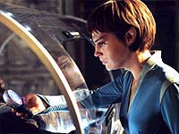
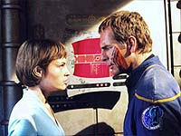
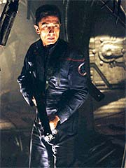
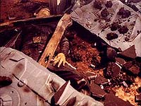
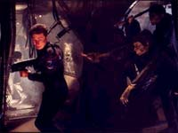

|
MANCHETE
DO EPISÓDIO
Thriller
recria "A Volta dos Mortos
Vivos", em uma versão Vulcana
Episódio
anterior | Próximo
episódio
Sinopse:
Archer e Phlox tentam prender T'Pol --totalmente fora de controle-- à maca da enfermaria. Após muito esforço, eles conseguem introduzi-la na câmara de diagnósticos.
O drama foi iniciado no dia anterior. Archer e Trip estudam cartas estelares Xindis no centro de comando, e o engenheiro afirma que a tripulação precisa de algum descanso, pedindo que o capitão reestabeleça a "Movie Night", a sessão de cinema semanal a bordo da Enterprise --evento que não mais ocorreu desde a entrada na Extensão Délfica. Archer, relutante, concorda.
 T'Pol chega ao centro de comando e oferece ajuda no estudo das cartas estelares, mas o trio é interrompido por Hoshi, que informa, da ponte, que há uma nave Vulcana mandando um sinal automático de socorro. Ela tentou contatá-los, mas não obteve resposta. O trio vai para a ponte.
Archer ordena o estabelecimento de um curso para a nave, chamada Seleya, que leva a Enterprise a um cinturão de asteróides. A Seleya está no meio do campo, e Trip constata que os rochedos espaciais são ricos em Trellium. A Enterprise é grande demais para navegar pelo campo e chegar à Seleya, então Archer, T'Pol, Reed e um MACO chamado Hopkins levam um shuttlepod com o objetivo de realizar uma missão de resgate. Enquanto isso, Archer deixa Trip com ordens de tentar obter Trellium dos asteróides.
A caminho da Seleya, T'Pol revela a Archer que serviu naquela nave por um ano, imediatamente antes de ser enviada ao consulado Vulcano na Terra. Quando Archer pergunta a ela o que a nave poderia estar fazendo na Extensão, ela conta que os Vulcanos estavam tentando mapear o perímetro termobárico. Após vários dias, eles foram pegos numa distorção subespacial e arrastados para dentro da Extensão. A Vankaara foi enviada para encontrá-los e Archer se lembra do que aconteceu a ela, segundo Soval descreveu, antes que partissem para a Extensão.
Na Seleya, Archer e seu grupo procuram por sobreviventes. Eles se separam: Archer caminha com T'Pol, e Reed, com Hopkins. Eles encontram muitos destroços e Reed vê sangue em uma parede. Archer e T'Pol detectam um sinal de vida atrás de uma porta e, quando a abrem, são atacados por um Vulcano. São exigidos dois tiros para tonteá-lo. T'Pol o examina e diz que suas rotas sinápticas foram severamente danificadas. Eles começam a carregá-lo para o shuttlepod, quando são atacados por outros dois Vulcanos. Archer chama Reed e alerta para que ele tenha cautela, pois os Vulcanos se tornaram violentos. Reed e Hopkins trocam tiros com Vulcanos enlouquecidos, e o MACO é ferido.
 Os quatro se reagrupam e vão na direção da comporta de ar em que está atracado o shuttlepod. Uma vez lá, encontram dois Vulcanos. Um deles tranca a porta da comporta de ar --outro caminho precisa ser encontrado para voltarem ao shuttlepod. Eles descobrem que todas as quatro paredes até a comporta foram seladas e decidem ir à enfermaria para tratar os ferimentos de Hopkins.
Uma vez lá, Archer e cia. encontram um Vulcano numa das biocamas. T'Pol não sabe o que há de errado com ele. Mais que isso, a Vulcana começa a exibir estranhos sintomas: o controle que ela tinha sobre suas emoções parece estar escapando. Eles vão à sala de controle auxiliar para liberar as passagens fechadas que levam ao shuttlepod.
Enquanto isso, após uma tentativa fracassada de usar o teletransporte, Trip e Mayweather levam o outro shuttlepod a um asteróide para coletar Trellium. Mas eles precisam partir depressa, pois uma anomalia espacial alterou o curso do asteróide, fazendo com que ele se encaminhe para uma região mais densa do campo. Após retornar à Enterprise, eles recebem uma transmissão de Archer, dizendo para que se apressem para ir ao resgate deles. Trip diz que não será possível fazer isso depressa, pois o shuttlepod foi seriamente avariado. O capitão também transmite os dados que T'Pol obteve do Vulcano doente na enfermaria. Archer pede que Phlox os analise imediatamente.
T'Pol e Reed redirecionam os controles dos lacres das passagens pela grade auxiliar. Quando T'Pol toca no relé, ele dá um choque, o que a deixa furiosa, acusando Reed de ter cometido um erro. Ela atira os circuitos em cima de Reed e Archer, e então acusa o capitão de sabotar seu trabalho no centro de comando, ainda na Enterprise.
Reed sugere que eles desliguem a força principal na nave para abrir as passagens, mas isso causará um vazamento no reator. T'Pol acusa Archer de querer matar todos os Vulcanos a bordo por não confiar neles. O capitão consegue pegar a pistola com que T'Pol o ameaçava.
Na Enterprise, Phlox determina que é o Trellium que está causando a destruição da função sináptica da tripulação da Seleya. Quando Trip pergunta o porquê de T'Pol não ter sido afetada na Enterprise, Phlox disse que eles estavam apenas trabalhando com pequenas quantidades, que não foram sintetizadas efetivamente. A Seleya, em compensação, estava num asteróide cheio do composto. Ele conta a Archer, por rádio, que será capaz de tratar T'Pol se eles conseguirem trazê-la de volta à Enterprise em tempo. No entanto, é tarde demais para salvar os outros Vulcanos.
Sem opções, eles iniciam a sobrecarga a bordo da Seleya e saem da sala de controle auxiliar. Eles entram no shuttlepod e escapam da Seleya segundos antes de ser destruída.
 Mais tarde, durante a "Movie Night", há um alerta tático. T'Pol, que vai sozinha para a ponte, é "atacada" pela tripulação Vulcana insana no turboelevador. Ao ver isso, ela acorda, na biocama, na enfermaria, onde Phlox tenta acalmá-la --ela obviamente está sofrendo os efeitos de sua estada na Seleya. A recuperação não será tão rápida quanto o previsto.
Comentários:
Apesar de abusar de uma estratégia que virou rotineira em
Jornada nas Estrelas e em Enterprise, "Impulse" é um episódio que funciona em seus próprios termos. Trata-se de um thriller totalmente despretensioso, que, diferentemente dos thrillers, já tem um final mais ou menos encaminhado.
O primeiro erro talvez tenha sido iniciar o segmento pelo final da história, o que levou à fórmula já batida do uso de flashback. Nada contra flashbacks em si, mas é um problema quando o recurso é usado meramente para valorizar o prólogo (teaser), em detrimento do resto do episódio.
É um vício dos roteiristas de Enterprise: o teaser necessariamente precisa ser curto e altamente impactante. Além de viciar a fórmula, a diretriz acaba levando a algumas aberturas de episódio que mais lembram fim de capítulo de novela mexicana. Esse é mais ou menos o ritmo em que começa
"Impulse".
Após o início embaraçoso, a narrativa é revertida para o flashback, onde a verdadeira história do episódio começa a ser contada. A premissa é interessante: no meio de um cinturão de asteróides que parece não obedecer às leis da física, uma nave Vulcana à deriva emite um sinal automático de socorro.
Enquanto Archer, T'Pol, Reed e o corporal Hawkins vão à nave, com um shuttlepod, para investigar a situação dos Vulcanos, Mayweather e Trip trabalham na extração de Trellium dos asteróides na borda do cinturão. O gancho foi bem aproveitado do episódio anterior, em que a tripulação obteve a fórmula para sintetizar Trellium-D, a substância que pode proteger o casco da nave das anomalias espaço-temporais da Extensão Délfica.
 Também foi uma boa opção costurar isso ao problema dos Vulcanos a bordo da Seleya. De uma forma geral, é positivo vermos nossos amigos de orelhas pontudas sofrendo de algo a que os humanos parecem ser imunes, só para variar um pouco. Um pouco mais forçada é a relação pessoal de T'Pol com a nave Vulcana --ela supostamente teria servido a bordo imediatamente antes de ir trabalhar na Terra. A troco de um pequeno dividendo com o potencial choque emotivo de ver o estado de seus ex-colegas, os roteiristas exigem um esforço de suspensão da descrença desnecessário.
Incômoda também é a posição indigna dos Vulcanos a bordo da Seleya. Fica claro, até pelo avanço do quadro de saúde de T'Pol, que a presença de Trellium torna-os cada vez mais descontrolados e desconfiados uns dos outros. Diante disso, é um verdadeiro milagre que eles não tenham matado uns aos outros a bordo. Também é estranho que eles sejam capazes de coordenar seus ataques aos tripulantes da Enterprise, como fizeram em algumas ocasiões durante o episódio, mas sejam incapazes de qualquer raciocínio ou diálogo.
Claramente, os Vulcanos e sua condição médica foram barateados em demasia, para fornecer a ação exigida pela premissa original. Em vez de seres outrora controlados enfrentado sérios distúrbios mentais e físicos, temos um bando de zumbis a bordo da Seleya. É praticamente uma versão Vulcana de "A Volta dos Mortos-Vivos".
Se a sua expectativa é a de um segmento de ficção científica sofisticado e orientado aos personagens, recheado de dilemas,
"Impulse" não é a sua melhor opção. Entretanto, se a proposta for ver um episódio de ação recheado de bonitos efeitos especiais, pode ser uma boa pedida. Ademais, a premissa dos zumbis, por mais que lembre os filmes de terror "B", é uma coisa que, num nível até mesmo inconsciente, acaba funcionando.
Isso fica exemplificado por uma das seqüências mais aterrorizantes e bem feitas do episódio, em que T'Pol se vê recuperada, de volta à Enterprise, mas súbita e crescentemente assombrada pelos zumbis Vulcanos, até ser cercada e acordar de um pesadelo, na enfermaria. Quando o episódio busca esse tipo de efeito, consegue sucesso.
Em compensação, quando tenta oferecer alguma profundidade em termos dos personagens, é um fracasso. O ícone disso é a decisão de Archer em não insular o casco da Enterprise com Trellium-D, para manter T'Pol na tripulação, em vez de deixá-la no planeta habitável mais próximo e seguir viagem, prosseguindo com sua missão.
 Sua justificativa é a de que ele não pode salvar a humanidade abdicando dos princípios que o tornam humano. É a frase certa para um capitão em
Jornada nas Estrelas, mas totalmente incompatível com o comportamento de Archer desde sua entrada na Extensão Délfica, em que ele não hesita em torturar prisioneiros e jogar sua ética pela janela. "Essa missão é muito importante para que eu deixe que minha moralidade interfira com ela", foi uma frase dele em
"Anomaly". Vai entender...
Apesar disso, os efeitos especiais continuam dando show e o episódio não chega a ser cansativo.
"Impulse" tem um bom ritmo e consegue manter o telespectador minimamente interessado. Também dá boa continuidade ao arco, ainda que possa ser visto como um segmento com sentido completo.
Citações:
Archer - "I can't try to save humanity without holding on to what makes me human."
("Não posso tentar salvar a humanidade sem me prender ao que faz de mim humano.")
Trip Tucker - "Part of the fun of a mystery is trying to solve it before it ends --using logic. You of all people should appreciate that."
("Parte da diversão de um mistério é tentar resolvê-lo antes que acabe --usando lógica. Você, de todas as pessoas, deveria apreciar isso.")
T'Pol - "Then use logic more quietly."
("Então use lógica mais silenciosamente.")
T'Pol - "This Expanse destroyed everyone aboard the Seleya. Don't let it happen to Enterprise."
("Essa Extensão destruiu a todos a bordo da Seleya. Não deixe que aconteça com a
Enterprise.")
Trivia:
 O roteirista Jonathan Fernandez se tornou
aqui o novo editor de histórias de Enterprise; Terry Matalas é um associado da produção.
O roteirista Jonathan Fernandez se tornou
aqui o novo editor de histórias de Enterprise; Terry Matalas é um associado da produção.
Sean McGowan já havia aparecido como o corporal Hawkins em
"Anomaly".
Pelo menos sete dublês com uniformes Vulcanos e visual aterrador foram utilizados nas gravações, fora um número pequeno de figurantes.
Ficha
técnica:
História de Jonathan Fernandez
& Terry Matalas
Roteiro de Jonathan Fernandez
Direção de David Livingston
Exibido em 08/10/2003
Produção:
057
Elenco:
Scott
Bakula como Jonathan Archer
Jolene Blalock como
T'Pol
John Billingsley
como Phlox
Anthony Montgomery
como Travis Mayweather
Connor Trinneer como
Charlie 'Trip' Tucker III
Dominic Keating como
Malcolm Reed
Linda Park como Hoshi Sato
Elenco convidado:
Sean McGowan como Hawkins
Episódio
anterior | Próximo
episódio
|